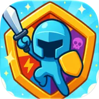

ABOUT
소개
게임공학을 전공하고 모바일 · Unity 개발을 거쳐, 지금은 LLM · RAG · 비전 모델을 서비스로 만들고 있습니다.
요즘 깊게 공부하는 것
LLM에이전트 설계, 툴 호출 라우팅, 답변 검증과 평가
머신러닝임베딩 모델 비교, 평가 지표와 통계적 검증
데이터 설계스키마 · 정합성, RAG용 청킹과 벡터 검색 구조
백엔드FastAPI 계층 설계, DB 세션 · 쿼리 최적화, 배포
프로젝트
| 프로젝트 | 기간 · 인원 | 구분 | 담당 |
|---|---|---|---|
| Safe-Farm | 2026.09 · 4인 | 원티드 AI 챔피언십 출품 | 팀장, AI 서버, RAG, 기상 파이프라인 |
| 오늘뭐멍냥 | 2026.08 · 5인 | 삼성 AXI 팀 프로젝트 | 팀장, 백엔드 리드, RAG 파이프라인 |
| LIFE,FIT | 2026.08 – 09 · 3인 | 사이드 프로젝트 | API 서버, 인증, 배포, 채팅 |
| K-NAVI | 2026.07 · 5인 | 삼성 AXI 팀 프로젝트 | 팀장, 수신호 인식, YOLO 장애물 인식 |
이력
| 구분 | 내용 |
|---|---|
| 학력 | 한국공학대학교 게임공학과 졸업 (2024.02) |
| 교육 | SAMSUNG AXI 수료 (2026.06 – 09), 수료자 최우수상 |
| 수상 | 게임공학과 졸업작품 우수상 (2023.07) · 영상 |
| 경력 | 하이킥 (2026.03 – 06), (주)오르카티비 (2024.07 – 2025.09) |
| 자격 | ADsP (2026.09), 정보처리기사 필기 (2026.09) |
SKILLS
기술 스택
프로젝트에서 직접 써 본 것만 적었습니다.
Languages
- Python
- TypeScript
- C · C++
- C#
- Swift
LLM · RAG
- LangGraph
- LangChain
- pgvector
- Tool Use
- Structured Output
- RAGAS
Backend
- FastAPI
- SQLAlchemy 2
- PostgreSQL
- Supabase
Frontend · App
- Next.js 16
- React 19
- Flutter
- Unity
ML · Vision
- PyTorch
- scikit-learn
- YOLOv8
- MediaPipe
- OpenCV
Robotics · Simulation
- ROS 2 Jazzy
- Gazebo Harmonic
Infra · 배포
- Docker
- Railway
- Vercel
협업 · AI 도구
- Git
- Jira
- Claude Code
- Codex
AI WORKFLOW
AI 활용 방식
규칙을 먼저 주고, 나눠 맡기고, 결과는 기준을 정해 검증한 뒤 다시 규칙에 반영합니다.
규칙 · 컨텍스트저장소별 AI 작업 규칙 문서
→
계획계획 담당 에이전트
→
병렬 위임조사 · 구현 · 리뷰 서브에이전트
→
교차 검증Claude ↔ Codex 루프
→
기록 → 규칙 갱신결정 기록 · 체크리스트
| 상황 | 쓰는 방법 | 남기는 결과물 |
|---|---|---|
| 작업 시작 전 | 저장소마다 AI가 지켜야 할 작업 범위 · 실행 방법 · 금지 규칙을 문서로 먼저 둡니다. 예: AI 서버를 공개 주소로 열지 않기, 로그인 확인은 서버 검증 함수로만 하기 | 저장소별 AI 작업 규칙 문서 (AGENTS.md · CLAUDE.md) |
| 큰 작업 | 계획 담당 에이전트로 단계를 나눈 뒤, 조사 · 구현 · 리뷰를 여러 하위 에이전트에 동시에 맡기고 결과를 합쳐 판단합니다 | 기능 1개 = 커밋 1개, 커밋에 AI 공동 작성 표기 |
| 리뷰 · 보안 점검 | 코드 리뷰 · 보안 점검 에이전트로 검사하고, 지적 항목마다 번호와 '어떻게 확인했나'를 완료 기준으로 붙여 관리합니다 | 리팩터링 체크리스트 40개 항목 (BE-01 ~ BE-40) |
| AI 결과 검증 | Claude Code가 구현하면 다른 회사 모델인 Codex가 리뷰하고, 지적 사항을 반영해 테스트가 통과할 때까지 반복합니다. 한 모델이 만들고 다른 모델이 검증하는 구조입니다 | 두 모델 교차 리뷰 후 통과한 커밋 |
| 반복 작업 | ① 저장소마다 VS Code 작업 메뉴(Ctrl + Shift + P → Run Task)를 만들어, 팀원이 가상환경 생성 → 패키지 설치 → 환경 검증을 명령 하나로 끝내게 했습니다 ② 여러 단계짜리 데이터 작업도 메뉴로 묶었습니다. 예: YOLO는 Gazebo 캡처 → 분할 · Kaggle 업로드 → 학습 → 모델 받기, RAG는 적재 → 조각 → 색인 → 평가 | 6개 저장소의 VS Code 작업 메뉴 (tasks.json) |
| 화면 작업 | 디자인 점검용 AI 스킬로, AI가 만든 화면에 흔히 나오는 상투적인 배치 · 문구를 찾아 고칩니다 | 랜딩 · 서비스 화면 |
| 긴 작업 · 결정 | 대화 맥락을 압축하는 도구와 코드 구조를 그래프로 정리하는 도구로 긴 작업을 이어갑니다. 결정은 기각한 대안까지 남기고, 근거 없이 정한 값은 코드에 따로 표시해 나중에 검증합니다 | 설계 결정 기록(ADR) 15건, 근거 없이 정한 값 표시 24곳 |
VERIFICATION
검증 방식
결과를 보기 전에 기준을 정하고, 같은 조건에서 재고, 차이가 우연이 아닌지 확인한 뒤에 채택합니다.
기준 먼저
→
평가셋 구축
→
같은 조건 측정
→
통계로 비교
→
채택 · 기각 기록
→
테스트로 고정
| 단계 | 평소 하는 일 | 실제 예 |
|---|---|---|
| 기준 먼저 | 측정 전에 주지표와 판정 규칙을 정하고, 품질 지표와 '0이어야 하는' 안전 지표를 나눕니다 | MRR 주지표, 구간이 겹치면 동률 / 알레르기 위반은 0건이어야 함 |
| 평가셋 구축 | 정답을 아는 골든셋을 만들고 골든셋 자체도 먼저 검증합니다. 악조건은 별도 셋으로 분리합니다 | 홀드아웃 275건, 질문 22문항 (자가검증 0 / 22), 악조건 5종 |
| 같은 조건 측정 | 서비스와 똑같은 필터 · 조건으로 재고, 날짜 · 표본 수 · 모델 · 신뢰구간을 함께 기록합니다 | 평가 스크립트의 축종 필터 누락을 찾아 수정 (18.2 → 21.2%) |
| 통계로 비교 | 차이가 신뢰구간 안이면 개선이 아니라 운으로 봅니다. 모델 비교는 같은 표본으로 짝지어 봅니다 | 임베딩 3종 부트스트랩 4,000회 → 동률, 9.5배 빠른 모델 채택 |
| 채택 · 기각 기록 | 효과가 없거나 나빠진 결과도 지우지 않고 이유와 함께 남깁니다 | 인덱스 24 → 53ms 미채택, OpenAI 전환 시 hit@5 하락 기록 |
| 테스트로 고정 | 고친 버그는 회귀 테스트로, LLM 답변은 다른 모델의 반증으로, 작업 완료는 '어떻게 확인했나'로 확인합니다 | 태풍 라우팅 회귀 테스트, 반증 오탐 제거 후 정확도 0.9 ~ 1.0 |
PROJECTS
프로젝트
카드의 상세보기에서 서비스 구조, 데이터 구조, 기술 선택 이유, 문제 해결, 배운 점을 볼 수 있습니다.
OTHER PROJECTS
그 밖의 작업
AI 서비스 이전부터 직접 만들고 출시해 온 작업입니다.

PentaShield
얼음 · 불 · 번개 · 저주 · 돌 다섯 속성으로 적을 얼리고, 아군으로 바꾸고, 석화시키는 전략 게임입니다. App Store와 Google Play에 직접 출시했습니다.
DucoTown
아바타로 자신을 표현하고 친구를 만드는 메타버스 서비스입니다. MediaPipe · OpenCV로 온디바이스 아바타 트래킹을 구현하고 Flutter 앱에 Unity를 임베딩했습니다.